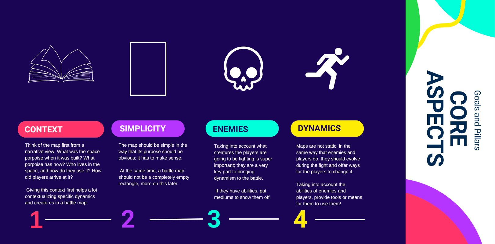
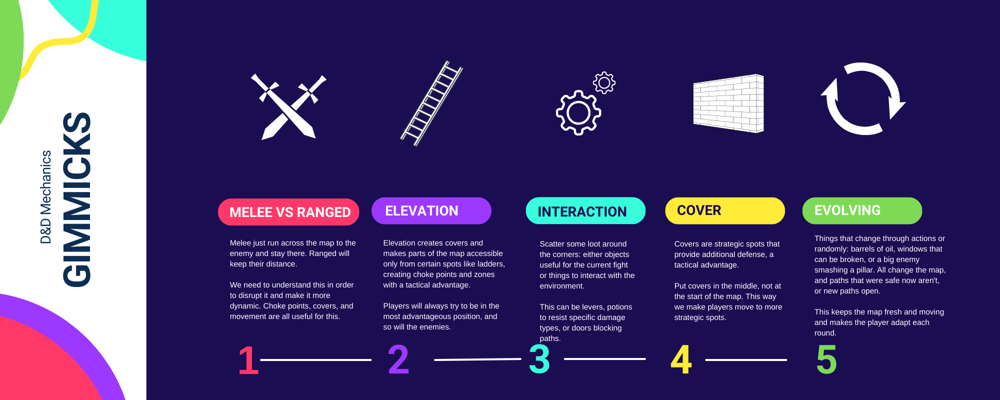

Windswept ridges Cavern
Double cavern of one of the mining branches of the Windswept Ridges.
In this page I explain my thought process behind how I approach the creation of battle maps for my D&D games.
First, following a Mix of Chris Perkins' Map-Fu method and a little tweaking, I came up with a workflow that let's me get the battlemaps fast, with quality and fresh for the players. 
I will not deepen into monster design as it's another fully independent topic, but it's nice to keep in mind what abilities do we want them to have, working in tandem with the map to create fun encounters.
The following terms are taken into account as things that make the map come alive, interactive and changing. When creating a map, I try to pick at least 3 of this gimmicks and combine them to create unique but still mechanically challenging maps.
With these 5 gimmicks, I choose the ones I think fit most nicely in the narrative context of the map. After that, the next step is grabing some paper and pencil.
This step is the first look on the final map. We know the place, we know what gimmicks should be here and we know what creatures are fighting here. Taking these 3 things into account, we follow this steps:
Gathering some references of the place I wanna build can help making the map believable. Even if it's a cave, or a lost temple, we can gather references from the real world or other maps.
In this sketch, I try to lay down the shape of the map, the gimmicks and interactable objects around the map. It's more a conceptual sketch than the final map. I try also write down things like heights differences, covers, interactable objects and it's effects to clarify if I meet the gimmicks for the map. I go back and forth until I have an iteration that I like for the playstyle of my players.
When the sketch is completed, I jump into Inkarnate to bring the final aspect of the map. It's a pretty well known program and has a lot of assets that allows to give the sketch a good final appearance.
After explaining how I create my battle maps from start to finish, below are some examples of real battle maps I created. If you like them, feel free to use them in your games too!
Double cavern of one of the mining branches of the Windswept Ridges.
One of the entrances of the fallen city of Aldura.
A tavern being used as a hideout.
A hidden base of a group called The Cinders in the sewers.